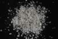

|
DOCUMENTATION_FORMAT: MINERAL
SAMPLE_ID: PYS1A >250um, PYS1A <850um, PYS1A fine gr, PYS1A <5um (GDS29)
MINERAL_TYPE: Phyllosilicate
MINERAL: Pyrophyllite
FORMULA: Al2Si4O10(OH)2
FORMULA_HTML: Al2Si4O10(OH)2
COLLECTION_LOCALITY: Staley, NC
ORIGINAL_DONOR: Bruce Hemingway
CURRENT_SAMPLE_LOCATION: USGS Denver Spectroscopy Laboratory
ULTIMATE_SAMPLE_LOCATION: USGS Denver Spectroscopy Laboratory
SAMPLE_DESCRIPTION:
less than 850um
Hand samples are clusters of white radiating acicular crystals which appear pure.
Salisbury, J. W., Walter, L. W., and Vergo, N., 1987, Mid-Infrared (2.1-25µm) Spectra of Minerals: First Edition, U.S. Geological Survey Open File Report 87-263.
IMAGE_OF_SAMPLE:

END_SAMPLE_DESCRIPTION.
XRD_ANALYSIS:
Pure pyrophyllite.
Salisbury, J. W., Walter, L. W., and Vergo, N., 1987, Mid-Infrared (2.1-25µm) Spectra of Minerals: First Edition, U.S. Geological Survey Open File Report 87-263.
END_XRD_ANALYSIS.
COMPOSITIONAL_ANALYSIS_TYPE: XRF # XRF, EPMA, ICP(Trace), WChem
| COMPOSITION KEYWORD |
Oxide ASCII |
Amount | Weight Percent, % |
Oxide html |
|---|---|---|---|---|
| COMPOSITION: | SiO2 | 66.32 | wt% | SiO2 |
| COMPOSITION: | TiO2 | 0.01 | wt% | TiO2 |
| COMPOSITION: | Al2O3 | 28.27 | wt% | Al2O3 |
| COMPOSITION: | Fe2O3 | 0.32 | wt% | Fe2O3 |
| COMPOSITION: | FeO | 0.03 | wt% | FeO |
| COMPOSITION: | MgO | 0.07 | wt% | MgO |
| COMPOSITION: | Na2O | 0.05 | wt% | Na2O |
| COMPOSITION: | K2O | 0.02 | wt% | K2O |
| COMPOSITION: | H2O+ | 4.94 | wt% | H2O+ |
| COMPOSITION: | Total | 100.03 | wt% |
COMPOSITION_TRACE:
COMPOSITION_DISCUSSION:
See additional discussion in:
Salisbury, J. W., Walter, L. W., and Vergo, N., 1987, Mid-Infrared (2.1-25µm) Spectra of Minerals: First Edition, U.S. Geological Survey Open File Report 87-263.
END_COMPOSITION_DISCUSSION.
MICROSCOPIC_EXAMINATION:
END_MICROSCOPIC_EXAMINATION.
SPECTROSCOPIC_DISCUSSION:
END_SPECTROSCOPIC_DISCUSSION.
SPECTRAL_PURITY: 1a2_3_4_ # PYS1A >250um # 1= 0.2-3, 2= 1.5-6, 3= 6-25, 4= 20-150 microns
SPECTRAL_PURITY: 1a2a3a4a # PYS1A <850um # 1= 0.2-3, 2= 1.5-6, 3= 6-25, 4= 20-150 microns
SPECTRAL_PURITY: 1a2a3a4a # PYS1A fine gr # 1= 0.2-3, 2= 1.5-6, 3= 6-25, 4= 20-150 microns
SPECTRAL_PURITY: 1a2_3_4_ # PYS1A <5um # 1= 0.2-3, 2= 1.5-6, 3= 6-25, 4= 20-150 microns
{kind=link}